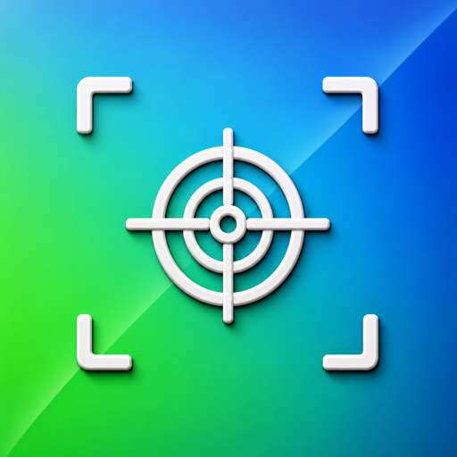

Place the phone in frame
Choose a blue or green background and enable corner markers. The screen becomes a clean, bright surface for replacement.

Chroma GridChroma key screen for production
Open Chroma Grid on a phone, shoot the scene, then replace the screen with footage, an interface, or an ad creative. High-contrast markers help lock the plane even when the camera moves.
See the workflowPost-production without setup pain
Choose a blue or green background and enable corner markers. The screen becomes a clean, bright surface for replacement.
Clear tracking points give the editor reliable anchors for corner pinning, planar tracking, and stabilizing the insert.
After keying, replace the screen with a video, landing page, app interface, ad banner, or product demo.
Why it helps
In bright light, screens catch glare, interfaces clip, cameras pick up moire, and display brightness fights the exposure. Chroma Grid leaves only a color plane and tracking points in the shot, so the final content can be added in post.
Shoot one take with the phone, then swap creative versions during editing.
Control reflections and lighting without fighting a live screen interface.
Quickly place footage, landing pages, and app demos into real camera shots.
Markers hold the plane
This shape reads well on blue and green backgrounds, stays visible after compression, and makes it easier to track the screen corners accurately.